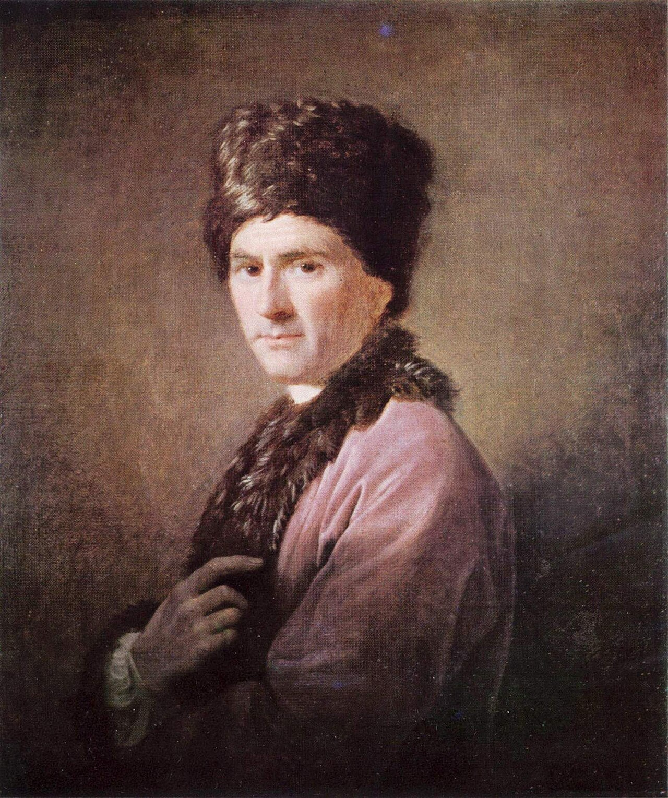
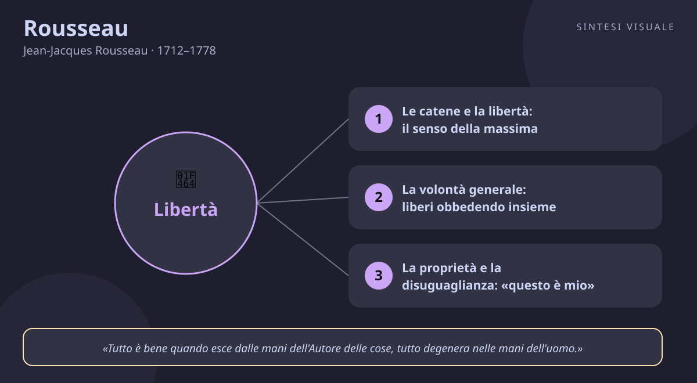

Rousseau
Jean-Jacques Rousseau · 1712–1778
«L'uomo è nato libero, e ovunque è in catene»
- Volontà generale
- Disuguaglianza
- Educazione
- Sentimento
💬La massima
«L'uomo è nato libero, e ovunque è in catene.»
— Jean-Jacques Rousseau, Il contratto sociale, Libro I, capitolo 1 (1762). In francese: «L'homme est né libre, et partout il est dans les fers.»
Spiegazione. È la frase d'apertura del Contratto sociale, e funziona come uno schiaffo: se siamo nati liberi, perché ogni passo della vita ci trova legati — a leggi che non abbiamo scelto, a padroni che si credono tali, a debiti, orari, gerarchie? Rousseau non sta facendo poesia, sta aprendo un processo: le catene esistono, sono reali, ma non sono naturali. Sono opera nostra, della storia, delle istituzioni che abbiamo costruito. E la domanda che segue è quella che conta: «che cosa può rendere legittimo questo cambiamento?». In altre parole: esiste un modo di vivere insieme che non sia una prigione? La sua risposta è il patto sociale fondato sulla volontà generale: obbedire solo a leggi che abbiamo dato a noi stessi, restando liberi pur uniti agli altri. Come i musicisti di un'orchestra: ciascuno rinuncia a suonare ciò che vuole, ma nessuno è schiavo del direttore, perché la partitura è stata scelta insieme e ciascuno, seguendola, esegue la propria musica.
Il punto sottile. Attenzione all'equivoco più diffuso: Rousseau non dice «torniamo a vivere nelle capanne». Non rimpiange un passato da selvaggi e non odia la società in sé: odia la società corrotta, quella che trasforma le differenze naturali in disuguaglianze oppressive e ci insegna a desiderare ciò che ci rende schiavi — il lusso, l'apparenza, l'approvazione altrui. La libertà, per lui, non è fare tutto ciò che passa per la testa: è non dover obbedire a nessun altro uomo, ma solo alla legge che ci siamo dati insieme. Chi dipende dalle voglie del momento è schiavo dei propri appetiti; chi dipende dal capriccio di un padrone è schiavo due volte. Libero è solo chi obbedisce a una regola condivisa e giusta, perché in quel caso — dice Rousseau — «obbedendo alla legge si obbedisce a sé stessi». È la differenza tra il passeggero ammanettato al sedile e il viaggiatore che ha scelto la destinazione con i compagni di viaggio: entrambi seguono un percorso, ma solo il secondo è libero.
Perché conta oggi. Ogni volta che firmiamo condizioni che non abbiamo letto, che subiamo un algoritmo che decide cosa vediamo e cosa compriamo, che restiamo in un lavoro che ci svuota perché «si fa così», stiamo indossando catene che nessuno ci ha messo con la forza: ce le siamo messe da soli, un clic alla volta. La domanda di Rousseau è la più attuale possibile: queste regole che mi legano, le ho davvero scelte? Le abbiamo decise insieme, o me le ha imposte qualcuno più forte? Chi la pone con onestà scopre quante delle sue catene sono sbarre invisibili — e comincia a cercare la chiave.
👤Biografia
Jean-Jacques Rousseau nacque a Ginevra il 28 giugno 1712 da un orologiaio e da una madre che morì pochi giorni dopo il parto: una ferita originaria che non si rimarginò mai. Il padre, rissoso e avventuroso, lo abbandonò di fatto a dieci anni, fuggendo da Ginevra dopo una lite; il ragazzo crebbe tra un pastore severo, un'incisione di apprendista e una fame di libri divorati a caso — Plutarco, romanzi, vite di santi. A sedici anni scappò dalla città e incontrò Madame de Warens, la protettrice che lo accolse, lo amò e lo educò, tra conversioni religiose di convenienza e anni di ozio fecondo alle Charmettes, dove imparò la musica copiando spartiti per vivere.
Il divo riluttante di Parigi. Arrivato a Parigi con un sistema di notazione musicale e poche raccomandazioni, entrò nel giro di Diderot e collaborò all'Enciclopedia per la musica. Nel 1750 vinse a sorpresa il premio dell'Accademia di Digione con il Discorso sulle scienze e le arti: le lettere e le arti corrompono i costumi invece di migliorarli. Da un giorno all'altro il copista sconosciuto divenne celebre, e lui coltivò la celebrità con un misto di vanità e insofferenza: abbandonò la parrucca e la spada, si vestì dimesso, e intanto frequentava i salotti che diceva di disprezzare. Visse per decenni con Thérèse Levasseur, una cucitrice quasi analfabeta che sposò poi nel 1768, e affidò all'ospizio tutti e cinque i figli avuti da lei: la macchia che i nemici non gli perdonarono mai e che lui confessò con tormento nelle Confessioni.
La condanna e la fuga. Nel 1762 pubblicò in pochi mesi i due libri che lo resero immortale e maledetto: Emilio e Il contratto sociale. Il Parlamento di Parigi condannò Emilio, fu spiccato un mandato d'arresto e Rousseau fuggì: prima a Môtiers, in territorio prussiano, dove vestiva un caffettano armeno e riceveva visite di pellegrini curiosi; poi, nel 1766, in Inghilterra ospite di David Hume — l'amicizia naufragò in pochi mesi tra sospetti e accuse reciproche, e il ritratto di Ramsay con il curioso costume armeno resta come memoria di quel soggiorno. Rientrato in Francia sotto falso nome, visse gli ultimi anni tra erbe officinali, musiche e crescenti manie di persecuzione, scrivendo le Confessioni e le Fantasticherie del passeggiatore solitario. Morì a Ermenonville il 2 luglio 1778, a sessantasei anni; sedici anni dopo la Rivoluzione ne trasferì le ceneri al Panthéon di Parigi con tutti gli onori.
📌Sintesi del pensiero
Rousseau pensa che l'uomo nasca buono e libero, e che sia la società corrotta — con la proprietà privata, il lusso e la sete di prestigio — a renderlo cattivo e schiavo. Ma non si può tornare indietro: bisogna costruire istituzioni giuste, fondate su un patto in cui ciascuno si unisce a tutti obbedendo soltanto alla volontà generale, restando così libero come prima. Alla politica affianca l'educazione: nell'Emilio mostra come crescere un ragazzo a contatto con la natura, lontano dalle maschere sociali, perché diventi un uomo intero prima ancora che un cittadino.
- Natura e corruzione: l'uomo nasce sano, la società malata lo ammala; il male è storico, non originale.
- Volontà generale: la legge è legittima solo se esprime ciò che tutti vogliono come cittadini, non gli interessi dei singoli.
- Educazione naturale: formare l'uomo prima del cittadino, con l'esperienza e il cuore prima dei libri.
- Sentimento e pietà: la compassione che proviamo di fronte a chi soffre è la prima virtù, più antica di ogni ragione.
🏛️I temi fondamentali
- Le catene e la libertà: il senso della massima. Tutto Rousseau parte da qui: siamo nati per bastare a noi stessi, e ci ritroviamo legati a mille fili — il mutuo, il giudizio dei vicini, il posto in graduatoria, il numero di seguaci. Le catene vere non sono quelle di ferro: sono le dipendenze che ci fanno desiderare ciò che ci opprime. Il ricco incatenato al suo patrimonio che deve difendere giorno e notte non è più libero del povero incatenato al bisogno: entrambi obbediscono a un padrone. Esempio concreto: scorri le offerte di telefoni nuovi quando il tuo funziona benissimo, e senti una piccola ansia, come se restare indietro fosse una colpa. Quell'ansia è una maglia della catena: non è il telefono a mancarti, è l'approvazione che credi di comprare con il telefono.
- La volontà generale: liberi obbedendo insieme. Il cuore del Contratto sociale è un'idea semplice e vertiginosa: posso essere libero anche in società, ma solo se obbedisco a leggi che ho contribuito a fare. Quando la legge esprime la volontà generale — ciò che tutti vogliono in quanto cittadini, non in quanto singoli affamati di privilegi — allora chi la rispetta obbedisce a sé stesso. La maggioranza che schiaccia la minoranza per interesse non è volontà generale: è il più forte che detta legge, e le catene restano. Esempio concreto: il condominio che vota all'unanimità il regolamento sul rumore e poi lo rispetta anche quando dà fastidio: nessuno si sente oppresso, perché la regola è figlia di una scelta comune. Se invece l'amministratore impone orari decisi da solo, ogni richiamo suona come un sopruso, anche quando ha ragione.
- La proprietà e la disuguaglianza: «questo è mio». Nel Discorso sull'origine della disuguaglianza Rousseau indica il giorno maledetto: quello in cui qualcuno recintò un terreno, disse «questo è mio» e trovò gente ingenua che gli credette. Da quel gesto nacquero la proprietà, la divisione tra ricchi e poveri, le leggi fatte dai ricchi per proteggere i ricchi e infine ogni forma di servitù. Attenzione: non propone di abolire tutto e spartire i campi — sa che è impossibile — ma mostra che la disuguaglianza economica non è opera di Dio né della natura: è storia umana, e la storia umana si può correggere. Esempio concreto: due bambini nascono a pochi chilometri di distanza, uno in un quartiere con biblioteche e campi sportivi, l'altro tra palazzi fatiscenti e scuole senza laboratori. Nessuno dei due ha scelto il punto di partenza: chiamare «merito» ciò che segue è dimenticare il recinto.
- L'educazione naturale: crescere un uomo prima che un cittadino. Nell'Emilio Rousseau immagina di allevare un ragazzo lontano dalle maschere: niente fasce strette, niente lezioni a memoria a cinque anni, niente gare di vanità. Prima il corpo e i sensi — correre, toccare, sbagliare, sopportare la fatica — poi, lentamente, la ragione e il cuore: imparare un mestiere manuale, conoscere la natura, provare pietà per chi soffre. Il precettore non predica: prepara le situazioni in cui il ragazzo scopre da solo. Esempio concreto: invece di spiegare al figlio che il denaro si guadagna, lo porti con te a montare un mobile per un vicino e a ricevere in cambio una torta calda: capisce con le mani che il lavoro serve, che aiutare scalda, e nessun discorso avrebbe insegnato altrettanto.
- Il sentimento prima dei sistemi: pietà e cuore. Contro i filosofi che spiegano tutto con il calcolo, Rousseau rivendica i diritti del cuore: prima della ragione viene la pietà, quel turbamento che proviamo vedendo soffrire un altro essere, e prima dei trattati viene la coscienza, «voce divina» che distingue il bene dal male. Per questo dà valore alla religione del cuore e propone, nel Contratto sociale, una sobria religione civile — pochi dogmi condivisi che tengano unita la comunità senza inquisizioni. Esempio concreto: in metropolitana vedi un anziano in piedi e ti alzi prima ancora di ragionare sul galateo: quella è la pietà di Rousseau, un moto che precede il pensiero. Se poi resti seduto e costruisci tre buone scuse, quella è la ragione al servizio dell'egoismo.
📚Le opere principali
- Discorso sulle scienze e le arti (1750). Il testo che lo rese famoso: rispondendo al quesito dell'Accademia di Digione, sostiene che il progresso delle lettere e delle arti ha corrotto i costumi invece di purificarli, perché ha sostituito la virtù con l'apparenza. Tesi centrale: la civiltà raffinata rende gli uomini deboli, vanitosi e dipendenti dal giudizio altrui. Conta perché è il manifesto di rottura con l'ottimismo dei Lumi: da lì in poi nessuno potrà più dare per scontato che «più cultura» significhi «uomini migliori».
- Discorso sull'origine e i fondamenti della disuguaglianza (1755). Una storia filosofica dell'umanità: dallo stato di natura — uomini soli, sani, guidati da amore di sé e pietà — alla società, attraverso la proprietà privata, l'agricoltura, la metallurgia e le leggi dei ricchi. Tesi centrale: la disuguaglianza morale e politica non è naturale, è nata con la proprietà e le istituzioni. Conta perché è la prima grande critica strutturale dell'ordine sociale moderno: senza questo testo non esisterebbero né Marx né l'intera sociologia della disuguaglianza.
- Il contratto sociale (1762). Il libro politico più influente dei tempi moderni: cerca il fondamento legittimo dell'autorità e lo trova nel patto con cui ciascuno si dà a tutti, dando vita al corpo sovrano guidato dalla volontà generale. Tesi centrale: la libertà si salva in società solo obbedendo a leggi che ci siamo dati da cittadini. Conta perché ha fornito il vocabolario della Rivoluzione francese — sovranità popolare, uguaglianza dei cittadini, legge come espressione della volontà generale — e ancora oggi ogni costituzione democratica parla, senza saperlo, la sua lingua.
- Emilio o dell'educazione (1762). Un romanzo-trattato in cinque libri che segue la crescita di Emilio dalla culla al matrimonio sotto la guida di un precettore saggio. Tesi centrale: formare prima l'uomo — sano, sensibile, autonomo — e poi il cittadino, seguendo la natura invece di forzarla. Conta perché ha fondato la pedagogia moderna: l'idea che il bambino non sia un adulto in miniatura da riempire, ma una pianta da coltivare secondo le sue stagioni, arriva da qui fino a Montessori.
💬Massime celebri
«Tutto è bene quando esce dalle mani dell'Autore delle cose, tutto degenera nelle mani dell'uomo.» — Emilio, Libro I, apertura (1762); in francese: «Tout est bien sortant des mains de l'Auteur des choses, tout dégénère entre les mains de l'homme.» Conta perché è la sintesi perfetta del suo pensiero in una riga: il male non è nella creazione, è nella nostra manomissione. Da mandare a memoria come chiave di tutto Rousseau.
«Il primo che, cintato un terreno, pensò di dire: questo è mio, e trovò gente abbastanza ingenua da credergli, fu il vero fondatore della società civile.» — Discorso sull'origine della disuguaglianza, seconda parte (1755); in francese: «Le premier qui, ayant enclos un terrain, s'avisa de dire: Ceci est à moi… fut le vrai fondateur de la société civile.» Conta perché individua con un'immagine indimenticabile il peccato originale della storia: la proprietà. Da mandare a memoria ogni volta che qualcuno chiama «naturale» una disuguaglianza.
⌛Contesto storico
- Rousseau nacque nel 1712 a Ginevra, città-Stato calvinista di orologiai, banchieri e pastori, orgogliosa della sua indipendenza e lacerata tra un patriziato chiuso e una borghesia che chiedeva diritti. Crebbe in un'Europa che usciva dalle guerre di religione ed entrava nel secolo dei Lumi: Parigi contava mezzo milione di abitanti, i caffè e i salotti discutevano di Newton e di tolleranza, Diderot e d'Alembert impaginavano l'Enciclopedia mentre Voltaire tuonava contro il fanatismo da Ferney. Era una società di ordini rigidissimi — clero, nobiltà e terzo stato in Francia — dove il lusso dell'aristocrazia conviveva con carestie ricorrenti e con contadini tassati fino all'osso.
- La sua vita adulta attraversò il cuore del Settecento: la guerra di successione austriaca e poi la guerra dei Sette anni (1756–1763), il primo vero conflitto mondiale, ridisegnarono le potenze mentre l'Inghilterra strappava alla Francia il Canada e l'India. A Parigi i parlamenti — tribunali aristocratici — bloccavano le riforme della monarchia; a Ginevra le fazioni borghesi si scontravano con il Piccolo Consiglio. Nel 1762, l'anno del Contratto e dell'Emilio, il Parlamento di Parigi condannò il libro e la corona spiccò l'arresto: la macchina della censura dell'ancien régime si mise in moto contro di lui, costringendolo a una fuga di anni. Morì nel 1778, undici anni prima della presa della Bastiglia: fece in tempo a diventare il profeta di una Rivoluzione che non vide.
- Da chi è stato influenzato dal calvinismo ginevrino, con l'idea di una comunità di cittadini-sovrani riuniti in patto; da Plutarco e dalla Repubblica romana, modello di virtù civica contro la mollezza moderna; da Locke e dal giusnaturalismo, da cui riprende il contratto pur rovesciandone le conclusioni; da Diderot e dall'ambiente enciclopedista, con cui condivise la battaglia contro pregiudizi e superstizioni prima della rottura; e dalla musica italiana e dalla vita contadina delle Charmettes, che gli insegnarono che la semplicità suona meglio dell'artificio.
- A chi ha trasmesso ai giacobini e a Robespierre, che portarono la volontà generale in Assemblea; a Kant, che disse di essere stato convertito da Rousseau al rispetto per l'uomo comune; al romanticismo tedesco e a Goethe, Schiller e Wordsworth, che ne ereditarono natura e sentimento; a Marx ed Engels, che ne ripresero la critica della proprietà; alla pedagogia moderna, da Pestalozzi a Montessori e Dewey; e fino a Rawls, all'ecologismo e alle teorie della democrazia partecipativa del Novecento.
🌊L'eredità
Il primo erede di Rousseau fu la Rivoluzione francese, che lo trattò da padre e da problema insieme: nel 1794 le sue ceneri entrarono al Panthéon tra gli applausi, Robespierre citava la volontà generale come un vangelo e la festa dell'Essere Supremo sembrava uscita dalle pagine sulla religione civile. Ma già allora qualcuno notava il rovescio: in nome della volontà generale si poteva ghigliottinare il dissenso, e i critici liberali — da Constant a Tocqueville — avrebbero passato un secolo a chiedersi se il cittadino totale di Rousseau non schiacciasse l'individuo.
La seconda eredità fu tedesca e interiore: Kant raccontò che fu Rousseau a insegnargli a onorare l'uomo qualunque, e da lì la filosofia tedesca prese la strada dell'autonomia — obbedire alla legge che la ragione dà a sé stessa è la traduzione kantiana del patto rousseauiano. Gli Sturm und Drang e i romantici presero invece il Rousseau del cuore: la natura consolatrice, le passeggiate solitarie, le Confessioni come modello di ogni autobiografia sincera, da Goethe a Wordsworth. Poi venne Marx, che trasformò la critica della proprietà in teoria della lotta di classe, e Freud, che ritrovò nel bambino di Emilio l'idea che l'infanzia decida tutto.
Infine la scuola: ogni maestro che porta i bambini nell'orto invece di tenerli inchiodati al banco, ogni educatore che preferisce far scoprire invece che far ripetere, sta applicando Emilio senza saperlo. E ogni volta che un'assemblea di quartiere, un bilancio partecipativo o un referendum ridanno ai cittadini la penna delle regole, la vecchia domanda del 1762 torna a vivere: chi ha scritto le catene che portiamo, e possiamo riscriverle insieme?
🌍Esempi di oggi
- Il regolamento condominiale calato dall'alto. L'amministratore affigge nuovi orari per la palestra comune senza consultare nessuno, e gli inquilini brontolano pagando. Poi un vicino propone un'assemblea, si discute, si vota un compromesso che scontenta tutti un poco e accontenta tutti abbastanza: da quel giorno gli stessi orari, prima odiati, vengono rispettati senza storie. Stesse regole, due legittimità diverse: le prime erano catene, le seconde un patto.
- Il mutuo che decide la vita. Una coppia accetta un finanziamento al limite delle proprie forze per una casa più grande «come si deve», e da lì ogni scelta — il lavoro che non si può lasciare, le vacanze cancellate, le liti a fine mese — è dettata dalla rata. Non è la banca il padrone nel senso antico: sono loro stessi ad aver firmato. Riconoscere, con Rousseau, che la catena è opera propria è il primo passo per spezzarla: vendere, ridimensionarsi, riprendersi le sere.
- La classe senza voti alla primaria. Una maestra toglie per un trimestre i voti numerici e li sostituisce con commenti su ciò che ciascuno ha provato, sbagliato e riprovato, più un'ora a settimana nell'orto della scuola. I bambini litigano meno, chiedono di più, e i genitori scoprono che i figli raccontano la scuola con entusiasmo. È Emilio in miniatura: prima l'esperienza e il cuore, poi il giudizio — e la voglia di imparare torna a essere un desiderio, non una catena.
📄Jean-Jacques Rousseau (1712–1778), il ginevrino che accusò la civiltà di averci messo in catene e insegnò alla modernità a sognare la libertà
Ritratto (Jean-Jacques Rousseau in costume armeno, olio di Allan Ramsay, 1766, pubblico dominio, Wikimedia Commons):
🧠Quiz
Rispondi in chat con la lettera di ogni risposta, es. 1B 2A 3C 4D 5B. Oppure copia e rispondi così: «Quiz Rousseau: 1B 2A 3C 4D 5B» (usa - per le risposte che salti).
1 Cosa significa «l'uomo è nato libero, e ovunque è in catene»?
2 Che cos'è la «volontà generale» nel briefing?
3 Secondo il Discorso sulla disuguaglianza, quando nasce la società civile corrotta?
4 Come va educato il ragazzo secondo l'Emilio?
5 Quale episodio segna davvero la vita di Rousseau?
✅Soluzioni — tocca per vedere
1C – 2C – 3B – 4B – 5A
🔁Ripasso
- Massima e catene: se sbagli la 1, ricorda che le catene sono storiche, non naturali: la domanda giusta è «questa regola l'ho davvero scelta insieme agli altri?».
- Volontà generale e proprietà: se sbagli la 2 o la 3, ripeti la formula — legge legittima solo se nata dal bene comune, non dal più forte — e l'immagine del recinto con il cartello «questo è mio».
- Emilio e vita: se sbagli la 4 o la 5, pensa alla pianta da coltivare secondo le sue stagioni e alle date-chiave: 1712 Ginevra, 1750 il Discorso, 1762 il doppio scandalo, Hume e l'Inghilterra, 1778 Ermenonville.
🖼️In un colpo d’occhio

Tocca l’immagine per ingrandirla.